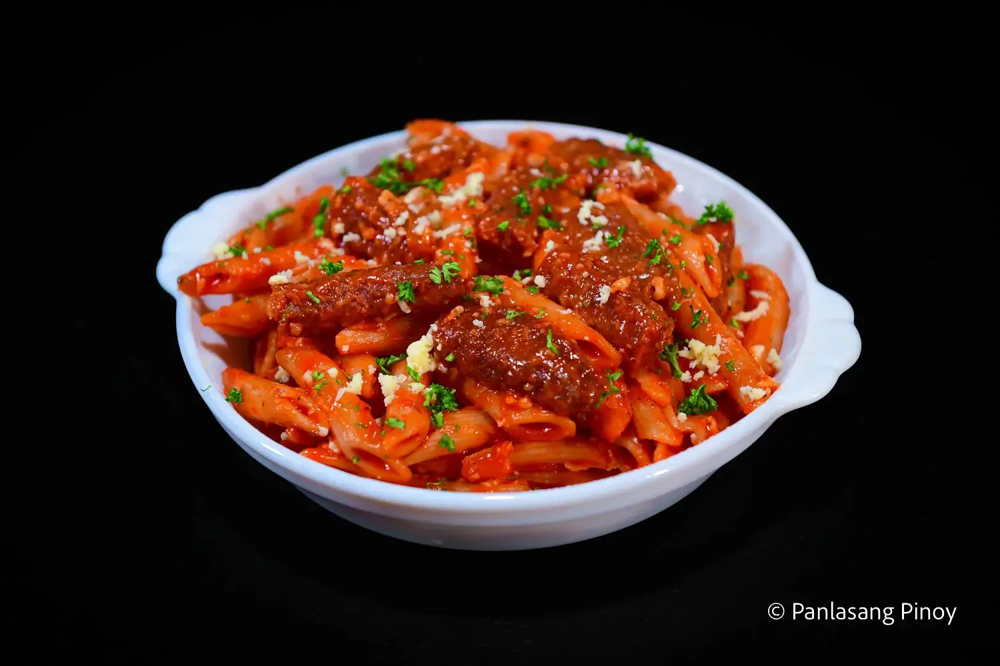

Longganisa Pasta
Description
This longganisa pasta is the perfect dish for those who want a lighter version of another pasta classic, spaghetti bolognese. Like the latter, a deliciously vibrant red sauce coats all the components of your longganisa pasta; the mix of both tomato sauce and paste will certainly do the trick! But unlike bolognese which makes use of ground meat in its sauce, longganisa pasta incorporates the titular meat through thick and chunky slices. Each bite is more flavorful and filling than the last, and makes your dish even more delicious!
Ingredients
- 6 CDO Skinless Longganisa cooked
- 1 lb. penne pasta cooked
- 1 lb. tomato sauce
- 1 onion chopped
- 4 cloves garlic minced
- 1 teaspoon Italian Seasoning
- ¼ teaspoon red pepper flakes
- 1 tablespoon tomato paste
- ½ cup cheddar cheese grated
- 3 tablespoons cooking oil
- Salt and ground black pepper to taste
Steps/Instructions
- Heat oil in a pan. Sauté onion and garlic until the onion softens.
- Pour the tomato sauce into the pan. Let boil.
- Add Italian seasoning and red pepper flakes. Cover and continue cooking in low heat for 15 minutes.
- Thicken the sauce by adding tomato paste and then put the cooked penne pasta into the pan. Toss. Cook for 1 minute.
- Slice the longganisa into half and add these into the pan. Toss.
- Season with salt and ground black pepper. Add cheddar cheese.
- Transfer to a serving plate. Serve warm. Share and enjoy!